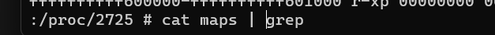
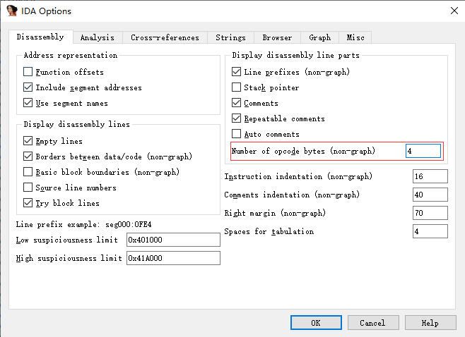
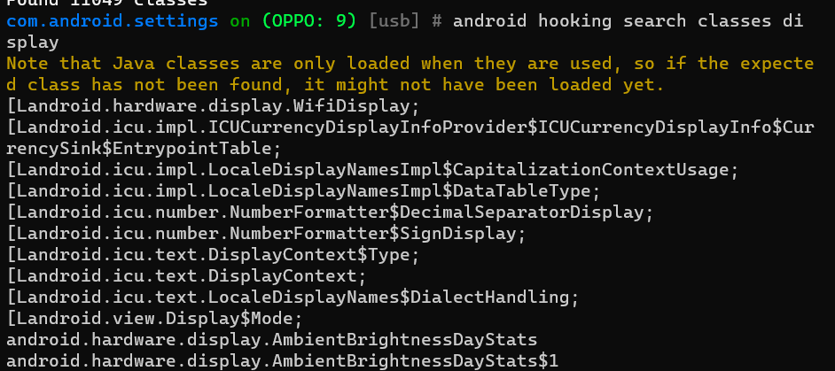
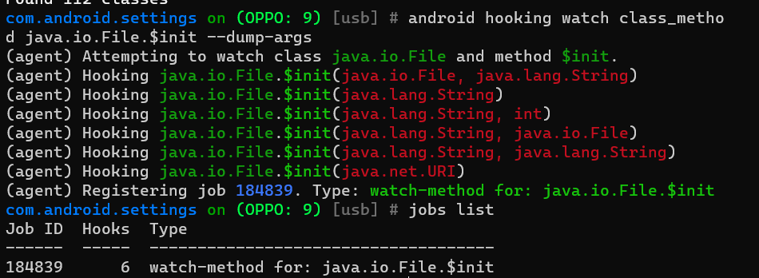
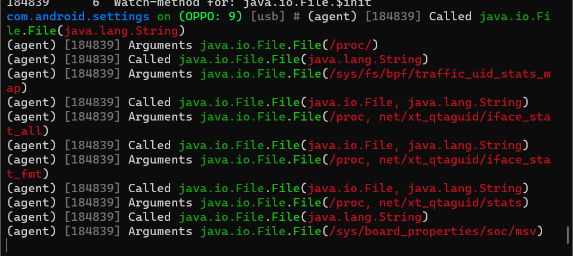
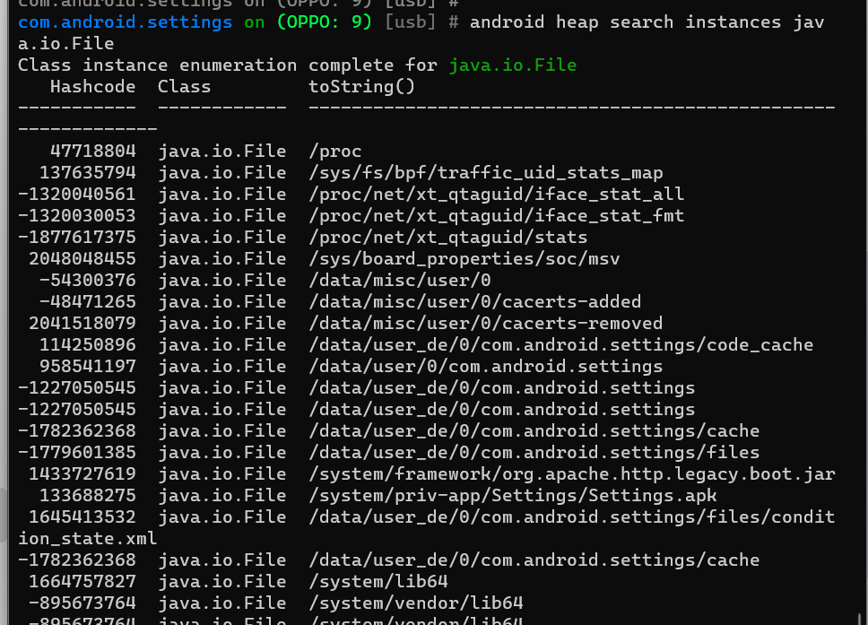
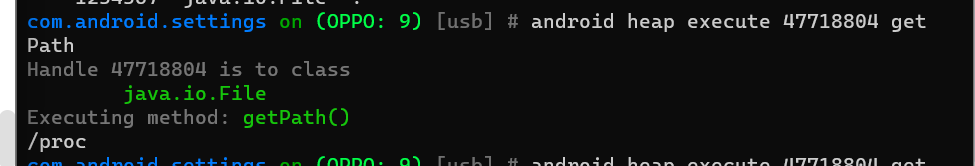
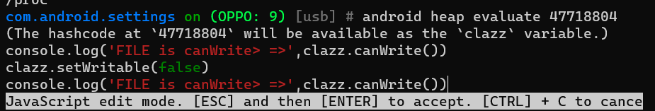
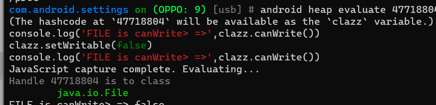

FridaNative层与Objection
Native
如何获取地址并hook
Interceptor.attach(target, callbacks): 在target指定的位置进行函数调用拦截，target是一个NativePointer参数，用来指定你想要拦截的函数的地址
- onEnter: function(args): 被拦截函数调用之前回调，其中原始函数的参数使用args数组（NativePointer对象数组）来表示，可以在这里修改函数的调用参数。
- onLeave: function(retval): 被拦截函数调用之后回调，其中retval表示原始函数的返回值，retval是从NativePointer继承来的，是对原始返回值的一个封装，你可以使用retval.replace(1337)调用来修改返回值的内容。需要注意的一点是，retval对象只在 onLeave函数作用域范围内有效，因此如果你要保存这个对象以备后续使用的话，一定要使用深拷贝来保存对象，比如：ptr(retval.toString())。
函数有符号
1 | |
函数无符号
通过查看对应进程的内存分布可以找到so库的基地址

接着用ida分析找到相应的函数地址
在 ARM 指令集中，Thumb 和 ARM 模式是两种不同的指令执行模式。这两种模式的指令格式和编码方式有所不同。
- ARM 模式： ARM 模式的指令长度为 32 位，每条指令都是一个完整的 32 位数据。ARM 模式的地址是 4 的倍数，即地址的最低两位是 00。例如，
0x1000或0x1004。- Thumb 模式： Thumb 模式的指令长度为 16 位，每条指令都是一个半字（16 位）。Thumb 模式的地址是 2 的倍数，即地址的最低两位是 01。例如，
0x1001或0x1005。当你看到一个地址的最后两位是奇数时，说明该地址处于 Thumb 模式。而如果是偶数，则处于 ARM 模式。这是由 ARM 架构决定的，而这，故我们在利用真实地址hook时，通过ida计算地址，若是thumb则需要加1，arm则不需要
判断方式
或者按照上方所说 也可以利用IDA辅助看
IDA -> Options -> General -> Number of opcode bytes (non-graph) 改为 4

==这里ida打开的so文件的架构与实际运行的架构得相同，才能保证相对地址相同==
用模拟器可能会出现错误
1 | |
常用API
Module
Frida 的 Module如下：
Objects returned by e.g. Module.load()
and Process.enumerateModules().
name: canonical module name as a stringbase: base address as aNativePointersize: size in bytespath: full filesystem path as a string
例子：
1 | |
可以通过enumerateSections()方法枚举模块的所有段
1 | |
Module.load(path)
返回一个Module对象
- 函数用途：该函数主要用于动态加载模块。在Frida中，模块通常指的是包含可执行代码的文件，比如动态链接库（.dll）、共享对象（.so）等。
- 参数：
path是一个字符串参数，它指定了要加载模块的文件系统路径。这个路径应该是模块文件在设备上的绝对路径。
枚举
1 | |
枚举进程中已加载的模块
1 | |
模块指的是当前进程加载的所有本地（native）库，这些库是以
.so
文件存在的，并且包含了应用程序或系统服务在运行时加载的原生代码
获取模块
Process.getModuleByAddress (address)
Process.findModuleByAddress (address)
Process.findModuleByName（module_name）
Process.getModuleByName (module_name)
find 前缀函数将返回 null，而 get 前缀函数将引发异常
hexdump()
1 | |
NativePointer
new NativePointer(s): 通过一个表示内存地址的字符串s来创建一个新的NativePointer实例。字符串可以是十进制表示，或者是十六进制表示（以0x开头）。简写形式为ptr(s)。isNull(): 返回一个布尔值，用来检查指针是否为 NULL。add(rhs): 返回一个新的NativePointer，值为当前指针加上rhs（可以是数字或另一个NativePointer）。sub(rhs): 返回一个新的NativePointer，值为当前指针减去rhs。and(rhs): 返回一个新的NativePointer，值为当前指针与rhs进行按位与操作的结果。or(rhs): 返回一个新的NativePointer，值为当前指针与rhs进行按位或操作的结果。xor(rhs): 返回一个新的NativePointer，值为当前指针与rhs进行按位异或操作的结果。shr(n): 返回一个新的NativePointer，值为当前指针向右移动n位的结果。shl(n): 返回一个新的NativePointer，值为当前指针向左移动n位的结果。not(): 返回一个新的NativePointer，其位是当前指针位取反的结果。toInt32(): 将当前的NativePointer转换为有符号的 32 位整数。toString([radix = 16]): 将当前的NativePointer转换为字符串表示，可选择基数（默认为 16）。readPointer(): 从当前内存位置读取一个NativePointer。writePointer(ptr): 将ptr写入当前内存位置。readS8(),readU8(),readS16(),readU16(),readS32(),readU32(),readFloat(),readDouble(): 从当前内存位置读取一个有符号或无符号的 8/16/32 等位的值或浮点/双精度值，并返回为数字。writeS8(value),writeU8(value),writeS16(value),writeU16(value),writeS32(value),writeU32(value),writeFloat(value),writeDouble(value): 将一个有符号或无符号的 8/16/32 等位的值或浮点/双精度值写入当前内存位置。readS64(),readU64(),readLong(),readULong(): 从当前内存位置读取一个有符号或无符号的 64 位或长整型值，并将其以Int64/UInt64值返回。writeS64(value),writeU64(value),writeLong(value),writeULong(value): 将Int64/UInt64值写入当前内存位置。readByteArray(length): 从当前内存位置读取length字节，并将其作为ArrayBuffer返回。writeByteArray(bytes): 将字节数组写入当前内存位置，字节数组可以是ArrayBuffer或者是一个整数数组，例如：[0x13, 0x37, 0x42]。readCString([size = -1]),readUtf8String([size = -1]),readUtf16String([length = -1]),readAnsiString([size = -1]): 从当前内存位置读取 ASCII、UTF-8、UTF-16 或 ANSI 字符串。如果你知道字符串的大小，可以提供可选的size参数；如果字符串是以 NUL 结尾的，可以忽略它或指定-1。对于length参数也一样，如果你知道字符串的字符长度，可以提供它。writeUtf8String(str),writeUtf16String(str),writeAnsiString(str): 将 JavaScript 字符串编码后（包括 NUL 终止符）写入当前内存位置。
Memory
Memory.scan
Memory.scan 方法用于在内存中搜索特定的字节模式。
1 | |
address: 起始地址，表示要搜索的内存范围的开始。size: 要搜索的内存范围的大小。pattern: 要搜索的字节模式，使用特定格式如 "13 37 ?? ff"，其中 "??"" 代表任意字节。callbacks: 包含回调函数的对象。onMatch(address, size): 当找到匹配时被调用，address是找到匹配的地址，size是匹配的大小。onError(reason): 当扫描过程中出现内存访问错误时被调用。onComplete(): 当内存范围被完全扫描后调用。
Memory.scanSync
Memory.scanSync 是 Memory.scan
的同步版本，直接返回包含匹配信息的对象数组。
1 | |
address、size和pattern的含义与Memory.scan相同。- 返回值是一个对象数组，每个对象包含：
address: 找到匹配的绝对地址。size: 匹配的大小。
Memory.alloc
Memory.alloc 方法用于在堆上分配指定大小的内存。
1 | |
size: 要分配的内存大小。options: 可选参数，当size是Process.pageSize的倍数时，可以指定内存分配的位置选项，如{ near: address, maxDistance: distanceInBytes }。
返回值是指向分配内存的 NativePointer，当所有的
JavaScript 引用都失效时，底层内存会被释放。
Memory.copy
Memory.copy 方法与 C 语言中的 memcpy()
类似，用于复制内存内容。
1 | |
dst: 目标地址，指向要复制到的内存位置。src: 源地址，指向要从中复制内容的内存位置。n: 要复制的字节数。
Memory.dup
Memory.dup 方法是 Memory.alloc 和
Memory.copy 的简写形式，用于分配内存并复制内容。
1 | |
address: 要复制内容的源内存地址。size: 要复制的内存大小。
返回值是一个
NativePointer，包含新分配内存的基地址。关于内存分配的生命周期，请参见
Memory.copy 的详细信息。
以下是对 Frida 的 Memory
对象的相关功能的中文详细解释：
Memory.protect
Memory.protect 方法用于改变内存区域的权限。
1 | |
ptr('0x1234'): 转换为NativePointer对象，指向需要改变权限的内存地址。4096: 指定需要改变权限的内存区域的大小（字节为单位）。'rw-': 指定新的权限设置，r代表可读，w代表可写，-代表不可执行。
Memory.patchCode
Memory.patchCode
方法用于安全修改内存中的代码。这个方法可以确保跨平台的兼容性，特别是在一些操作系统（如iOS）上，直接修改内存中的代码可能会导致进程失去其代码签名（CS_VALID）状态。
1 | |
address: 指向需要修改的内存地址的NativePointer对象。size: 指定需要修改的字节大小。apply: 一个 JavaScript 函数，它会被调用，传入一个可写的指针，你需要在此指针处写入你想要的修改。完成后返回。
例如：
1 | |
（没用过
Memory.allocUtf8String、Memory.allocUtf16String 和 Memory.allocAnsiString
这些方法用于在堆上分配内存，并以 UTF-8、UTF-16 或 ANSI
格式编码并写入字符串。返回的对象是一个指向这段内存的
NativePointer。
1 | |
str: 要编码并写入的 JavaScript 字符串。
MemoryAccessMonitor
MemoryAccessMonitor
监控一个或多个内存范围的访问，并在每个包含的内存页首次被访问时通知。
1 | |
ranges: 一个或多个范围对象，每个对象包含：base: 基础地址，为NativePointer对象。size: 以字节为单位的大小。
callbacks: 一个对象，指定回调函数：onAccess(details): 当访问发生时同步调用，details对象包含：operation: 触发访问的操作类型，为read、write或execute的字符串。from: 执行访问的指令的地址，为NativePointer对象。address: 被访问的地址，为NativePointer对象。rangeIndex: 在MemoryAccessMonitor.enable提供的范围中被访问范围的索引。pageIndex: 在指定范围内被访问的内存页的索引。pagesCompleted: 到目前为止已被访问（且不再被监视）的总页数。pagesTotal: 最初被监视的总页数。
1 | |
- 停止监控传递给
MemoryAccessMonitor.enable()的剩余内存范围。
Patch so层
1 | |
摘自：https://kuizuo.cn/docs/frida-so-hook
主动调用
NativeFunction 是 Frida
工具中的一个API，它允许你从JavaScript中创建和调用原生的编译过的函数。下面是对它的详细解释，用中文：
创建 NativeFunction
1 | |
address：一个指向你想要调用的原生代码函数的NativePointer。returnType：一个字符串，指定函数返回值的类型（例如，'void', 'int', 'pointer'）。argTypes：一个字符串数组，指定函数期望的参数类型。
你可以选择性地指定
abi（应用程序二进制接口），如果系统默认的ABI不适用的话。
支持的类型
voidpointerintuintlongulongcharucharsize_tssize_tfloatdoubleint8uint8int16uint16int32uint32int64uint64bool
例子
1 | |
Frida so层中的hook | 愧怍的小站 (kuizuo.cn)
env
Java.vm 是 Frida 中用于与 Java
虚拟机（JVM）进行交互的对象。它提供了一系列方法，允许你在 JavaScript
代码中执行与 Java 环境相关的操作。下面是对 Java.vm
对象中的三个方法的详细解释：
1. perform(fn)
perform 方法用于确保当前线程已经附加（attach）到 Java
虚拟机，并且在这种状态下调用一个函数
fn。这个方法通常用于从一个非 Java
线程（例如，来自原生代码的线程）执行需要 Java 环境的操作。
当你在一个回调函数中操作 Java 对象或调用 Java 方法时，通常不需要使用
perform，因为在这种情况下，Frida 已经确保了线程是附加到 JVM
上的。
1 | |
2. getEnv()
getEnv 方法用于获取当前线程的 JNIEnv
包装器。JNIEnv 是一个指向一组 JNI
函数的指针，可以用来在原生代码中操作 Java 对象。如果当前线程没有附加到
JVM，调用 getEnv 会抛出一个异常。
这个方法主要用于那些需要直接使用 JNI 接口的高级操作，比如在原生代码中直接创建和操作 Java 对象。
1 | |
3. tryGetEnv()
tryGetEnv 方法尝试获取当前线程的 JNIEnv
包装器。与 getEnv 不同的是，如果当前线程没有附加到
JVM，tryGetEnv 不会抛出异常，而是返回
null。
这个方法适用于你不确定当前线程是否已经附加到 JVM，并且你希望在没有附加的情况下避免异常的场景。
1 | |
总的来说，Java.vm 对象及其方法为在 Frida 脚本中与 Java
虚拟机交互提供了强大的功能，使得开发者能够用 JavaScript 编写与 Java
代码交互的逻辑。
例子
获取到 env 之后，你可以通过 JNI（Java Native
Interface）在原生层面上与 Java 虚拟机交互。这意味着你可以在不通过 Frida
的 Java.use 等高级抽象的情况下，直接操作 Java 对象、调用
Java 方法、处理 Java 异常等。
下面是使用 env 进行一些操作的例子：
1. 创建一个 Java 字符串
1 | |
2. 查找 Java 类并调用静态方法
1 | |
3. 处理 Java 异常
1 | |
objection
github链接：
https://github.com/sensepost/objection
安装：
1 | |
使用方式：
1 | |
可以用空格键提示可用的命令
可以使用help命令查看命令解释
选项
| 选项 | 功能 |
|---|---|
| -s, --startup-command “hook 命令” | 启动前注入 |
| -c, –file-commands FILENAME | 通过文件命令来运行 |
| --dump-args | 打印参数 |
| --dump-return | 打印返回值 |
| --dump-backtrace | 打印堆栈信息 |
objection log 文件位置:
C:\Users\用户\.objection\objection.log
可以通过-c来实现批量hook
常用命令
1 | |

这里在hook了之后可以看到job列表中多了一行，显示了hook的函数的数量

在设置应用中任意点击，可以看到：

主动调用案例：




插件的使用
https://www.cnblogs.com/Fightingbirds/p/13995950.html